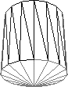

Hilfe

Parameter
| segmente% | Anzahl der Segmente (Standard=8) |
| boden% |
0=ohne Boden
1=mit Boden (Standard) |
| parent% | Identität des Objekts zu dem es hinzugefügt werden soll |
Rückgabewert
Es wird die Identität des Zylinders zurückgeliefert.
Beschreibung
Der Befehl CreateCylinder erstellt ein Zylinder-Gitterobjekt und liefert danach die Identität des Zylinders zurück.
Ein Zylinder wird auf der Koordinate 0,0,0 erstellt und hat danach einen Radius von 1.
Der optionale Parameter "segment%" gibt die Anzahl der Segmente an. Je höher dieser Wert, desto glatter erscheint das Objekt - allerdings benötigt so ein Objekt mehr Polygone. Der Wert kann nur im Bereich von 3-100 liegen. Dies wird nur im Debug-Modus überprüft. Ein größerer Wert wird bei ausgeschaltetem Debugger aber akzeptiert. Wird ein viel zu großer Wert übergeben, dann kann der Computer sogar abstürzen!
Berechnung der Polygonanzahl:
Polygone=(Segmente+(Segmente-2)*Boden)*2
3 Segmente: 8 Polygone - Prisma
8 Segmente: 28 Polygone - minimale Anzahl der Segmente
16 Segmente: 60 Polygone - glatter Zylinder (mittlere Entfernung)
32 Segmente: 124 Polygone - glatter Zylinder (nahe Entfernung)
Mit dem optionalen Parameter "boden%" kann man den Zylinderboden ein- oder ausschalten. Ist die Grundfläche des Zylinders nie sichtbar (oben und unten), dann sollte es unbedingt ausgeschaltet werden - dadurch wird die Polygonanzahl etwas reduziert.
Wurde der Parameter "parent%" angegeben, dann wird dieser Zylinder zu einem Objekt hinzugefügt. Falls nun ein Parent-Objekt bewegt wird, dann werden alle hinzugefügten Objekte automatisch verschoben. Ein Child-Objekt verschiebt dagegen kein Parent-Objekt mit.
Der Zylinder wird normalerweise an der Position 0,0,0 erstellt. Wurde Parent angegeben, dann wird es an der Position des Parent-Objekts erstellt.

Beispiel
Standardbeispiel:
SetBuffer BackBuffer()
WireFrame 1
camera = CreateCamera()
light = CreateLight(2)
RotateEntity light, 90, 0, 0
PositionEntity light, 0, 10, 10
cyl1 = CreateCylinder(20, 1)
RotateEntity cyl1, 30, 0, 0
PositionEntity cyl1, - 2, 0, 5
cyl2 = CreateCylinder(100, 0)
RotateEntity cyl2, 30, 0, 0
PositionEntity cyl2, 2, 0, 5
While Not KeyHit(1)
RenderWorld
Flip
Wend
End
Siehe auch